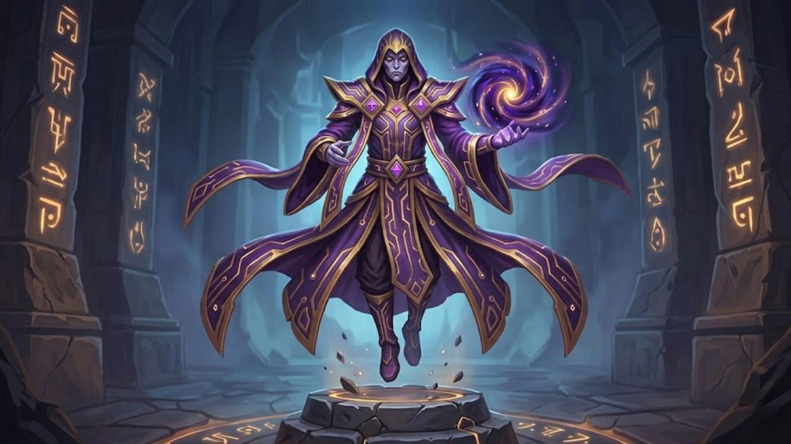

Story Of
The Solar Paladins
Commander: Aurelius

Backstory:
A troop of holy knights that shine with bright light. Aurelius leads them with golden banners. They believe that the light will always prevail, and their morale never wavers, even when surrounded by thousands of opponents.
Specialization:
Buff & Support. Their presence on the battlefield heals allies' wounds and blinds opponents with holy light.
Aurelius

Backstory:
The oldest member of the clan, rumored to have been there since the community forum was first established in 2018. He is not a fighter, but a keeper of ancient magical secrets and winning strategies. Aurelius can see the future of battles, providing guidance to other heroes to ensure the clan's victory.